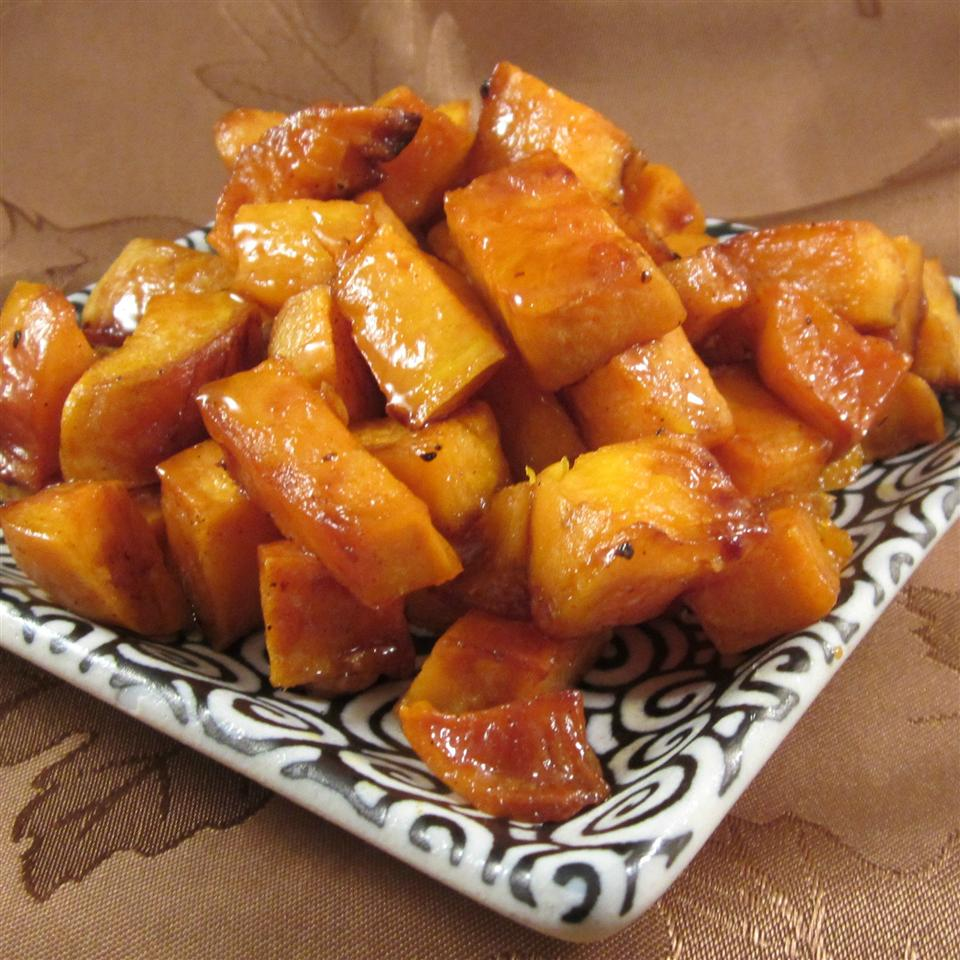

Sweet Potato Recipe

Ingredients
- Sweet potatoes
- Olive oil
- Seasoning: salt, pepper, honey, cinnamon
Steps
- Peel the potato's skin and chop the potato to bite size pieces.
- Place the potato pieces into a big bowl. For reference, 3 chopped sweet potatoes requires about 5 tablespoons of olive oil. Then season with salt and pepper to your prefernce.
- Mix the pieces in the bowl before placing them on a oven pan that is covered with aluminum foil.
- Drizzle some honey and season with some cinnamon.
- Preheat the oven to 450 degrees Fahrenheit before placing the pan into the oven.
- Heat for 20 minutes. Then take the pan out, flip the potato pieces and place back into the oven for another 20 minutes.
- Take it out of the oven. Drizzle a bit of honey and season with some cinnamon again.
- Place on a platter and get ready to serve!